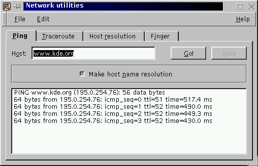

Next Previous Table of Contents
The
ping(8) command sends ICMP ECHO_REQUEST packets to network hosts to check for network reachability.
A response from a host (or anything that have an IP address) says that this
host is running at least a TCP/IP network stack and indicates that the network
route to go to this host is opened. The ping tab allows the execution
of the ping(8) command.

Ping uses the ICMP protocol's mandatory ECHO_REQUEST datagram to
elicit an ICMP ECHO_RESPONSE from a host or gateway. ECHO_REQUEST datagrams (``pings'') have an IP and ICMP header, followed by a
struct timeval and then an arbitrary number of pad bytes used
to fill out the packet.
Print addresses numerically rather than symbolically and numerically (this saves a nameserver address-to-name lookup).
This program is intended for use in network testing, measurement and management. Because of the load it can impose on the network, it is unwise to use ping during normal operations or for too long.
Next Previous Table of Contents